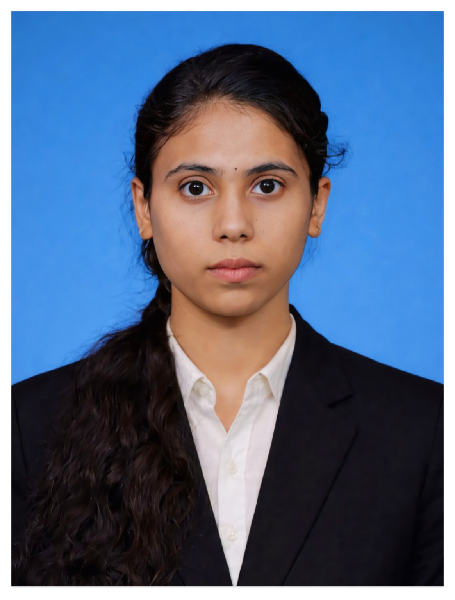

I'm Uvashree M — a third-year ECE student who finds the same quiet logic in a circuit diagram as in a well-built argument. I work where embedded electronics, signal processing, and curiosity about how systems sense the world all meet.
VIEW PROJECTS →
I'm drawn to the moment a circuit stops being a diagram and starts being a behaviour — when a sensor actually senses, and a timer actually waits.
That curiosity is what pulled me toward Electronics and Communication Engineering in the first place. I like subjects that reward patience: tracing a signal through a block diagram until it makes sense, debugging a circuit until the right voltage finally shows up on the multimeter, rewriting an explanation until it's simple enough to actually teach someone else.
Outside of coursework, I think about systems the way I think about most things I care about — quietly, and a little obsessively. I'm equally comfortable with a breadboard full of wires and a blank page that needs the right words. Some of my best engineering ideas have shown up while I was doing something that had nothing to do with engineering at all.
Right now, I'm in my third year, building toward a degree that I want to use for real, applied work — not just exams. I care about understanding why something works, not only that it does.
Objective. Design and build a low-cost circuit that automatically detects and indicates water level in a tank using the NE555 timer IC, without relying on a microcontroller — a deliberately analog approach to a problem most people solve digitally.
Approach. The NE555 was configured to exploit the conductivity of water itself as a switching trigger. As water rises and makes contact with sensor probes placed at different heights inside the tank, it completes a low-resistance path that changes the voltage seen at the timer's trigger pin. Each probe contact corresponds to a distinct LED indicator turning on, giving a simple visual readout of the level — low, medium, or full — without any software in the loop.
Core Components
Why it mattered. The project was a chance to work with the NE555 outside of its textbook astable/monostable examples and treat it as a real comparator-driven switching element. It also forced careful thought about probe placement, contact resistance, and false triggering — the kind of practical noise that a purely theoretical circuit diagram never warns you about.
Awarded first prize for presenting a paper on the Design of a MEMS-Based Piezoelectric Energy Harvester — a study of how microelectromechanical structures can convert ambient vibration into usable electrical energy, with a focus on harvester geometry and piezoelectric material selection for improved output efficiency.
Technical Paper PresentationHave a project, an opportunity, or just a good circuit problem to talk through? I'd like to hear about it.
I'm currently open to internships, collaborative academic projects, and conversations with anyone working at the intersection of embedded systems and signal processing.